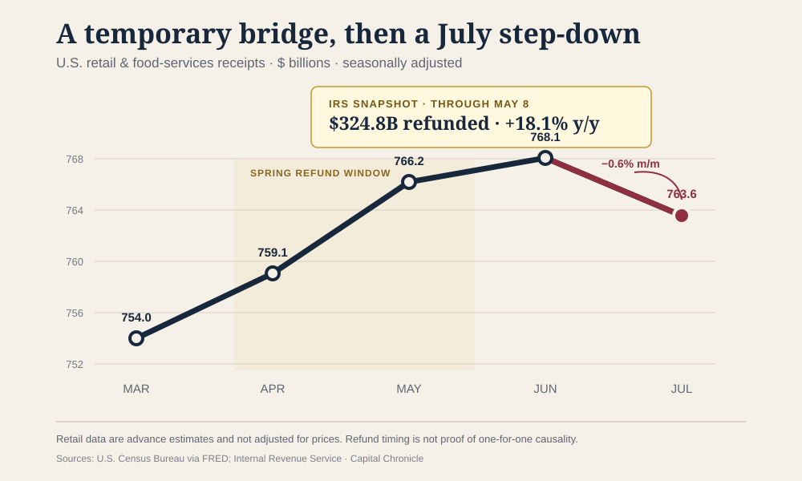
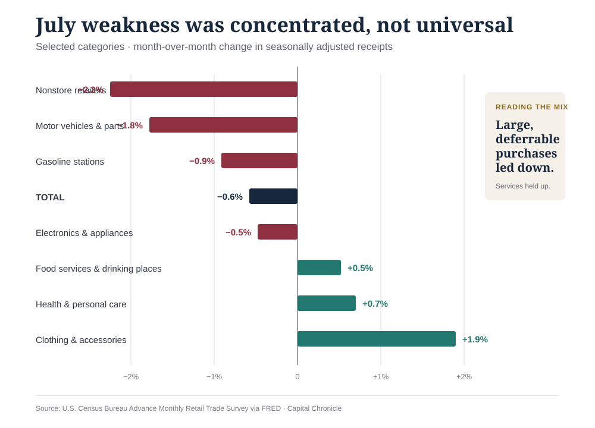
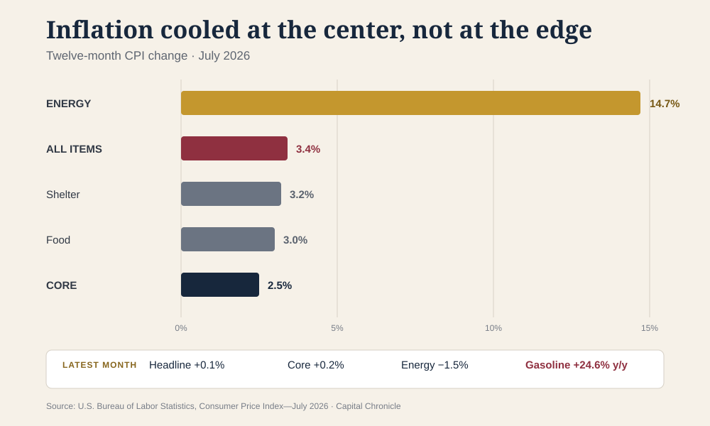

The American consumer did not fall off a cliff in July. It stepped off a temporary bridge.
Advance U.S. retail and food-services receipts were a seasonally adjusted $763.6 billion, down 0.6% from June—the first monthly decline in nine months—and still 5.0% above July 2025, according to Census Bureau data distributed by the Federal Reserve Bank of St. Louis. These are advance estimates, and they are not adjusted for price changes.
The composition makes the headline more useful. The pullback was led by nonstore retailers and motor vehicles, two large categories that had enjoyed unusually favorable timing in June. Restaurants, clothing stores and several home-related categories advanced. That is not a clean recession signal. It is evidence of a consumer becoming more selective after a spring cash injection and a promotion-heavy start to summer.
For the Federal Reserve, that distinction is the story. July weakens the argument that demand can absorb another rate increase without strain. It does not, by itself, create a case for a cut while headline inflation is 3.4%, energy inflation is in double digits and second-quarter domestic demand was still firm. The latest data point toward patience—not because the economy is uneventful, but because its signals now disagree in precisely the way that punishes a rushed decision.
A nearly $50 billion bridge
The tax-refund numbers were large enough to change the texture of the spring.
By May 8, the Internal Revenue Service had issued $324.757 billion of refunds for the 2026 filing season, compared with $274.979 billion at the comparable point in 2025. That is $49.778 billion more, or an 18.1% increase. The number of refunds was up 6.0%, while the average refund rose 11.5% to $3,276, according to the IRS filing-season statistics.
More refunds than at the comparable point in 2025. This is a cash-flow impulse, not a measured retail-spending multiplier.
Retail receipts rose from $754.0 billion in March to $766.2 billion in May and $768.1 billion in June before retreating to $763.6 billion in July. The timing supports a straightforward reading: larger refunds helped households bridge higher prices and bring some purchases forward, then that support faded.
It does not prove that refunds caused every dollar of the spring gain. The IRS figures are cumulative; retail sales are monthly. Households can save refunds, repay debt or spend them outside the retail categories. Auto incentives, the World Cup and the shift of Amazon's Prime Day into late June also affected timing. The defensible conclusion is narrower: refunds were a meaningful temporary tailwind, and July is the first clean look at demand after much of that tailwind had passed.

The consumer mix says “budgeting,” not “bunker”
Nonstore retailers, which include online sellers, recorded the largest major-category decline in July: 2.2%. Motor-vehicle and parts dealers fell 1.8%, gasoline-station receipts fell 0.9%, and electronics and appliance stores slipped 0.5%. The retail control group used in estimating goods consumption in GDP—excluding autos, gasoline, building materials and food services—fell 0.4%, according to Associated Press reporting on the Census release.
The other side of the ledger is harder to square with a broad consumer retreat. Clothing-store receipts rebounded 1.9%. Health and personal-care stores gained 0.7%. Food services and drinking places—the only services category in the retail report—rose 0.5% after a 0.4% June gain. Furniture, building-material and general-merchandise stores also edged higher in the official category data.
That pattern looks like prioritization. Households cut large, postponable and promotion-sensitive purchases while continuing to spend on meals out, back-to-school clothing and selected household needs. A consumer in a bunker cancels broadly. A consumer on a budget chooses.

The report is also narrower than the consumer economy. It captures mostly goods and only one service category; it does not cover hotel stays, most travel, health services or financial services. That matters because the Bureau of Economic Analysis found that second-quarter consumer spending increased in both goods and services. Real GDP grew at a 1.5% annualized rate, slower than the first quarter's 2.1%, but real final sales to private domestic purchasers accelerated to 3.9% from 1.7%.
July therefore starts the third quarter on a softer note. It does not rewrite the second quarter, and one advance retail estimate is not a trend.
Inflation cooled in the middle—and stayed hot at the edge
The July inflation report is encouraging until it is treated as permission.
The Consumer Price Index rose 0.1% in July and 3.4% over 12 months, down from 3.5% in June. Core CPI, excluding food and energy, rose 0.2% on the month and 2.5% over the year, matching its post-pandemic low. Shelter rose only 0.1% in July. Those are the figures that give the Fed room to wait.
The distribution removes room to relax. Energy prices fell 1.5% in July but remained 14.7% above a year earlier; gasoline was 24.6% higher. Food was up 3.0% over 12 months and shelter 3.2%. The BLS release also showed monthly increases in medical care, airfares, communication, education and recreation.

This is why the 5.0% year-over-year gain in retail receipts should not be presented as a 5.0% increase in purchasing power. Retail sales are nominal and their category weights do not match the CPI basket. Simply subtracting headline CPI would manufacture a “real retail sales” figure that neither agency publishes.
The broader price backdrop is similarly awkward. BEA's advance estimate put the second-quarter PCE price index at a 5.1% annualized rate and core PCE at 3.4%, even as July's CPI showed cooler momentum. The economy is not sending one inflation signal; it is sending a hot quarterly history and a cooler monthly update.
The Fed's burden of proof has shifted
On July 29, the Federal Open Market Committee held the federal-funds target at 3.50%–3.75% by a 9–3 vote. Beth Hammack, Neel Kashkari and Lorie Logan dissented in favor of a quarter-point increase. The official statement called inflation elevated relative to the 2% goal and specifically cited energy-related supply shocks.
Chair Kevin Warsh
Warsh took office May 22, 2026, and also chairs the FOMC. In July testimony he said the committee had “no tolerance for persistently elevated inflation.” Portrait and biographical authority: Board of Governors.
Hold, with three votes to hike
Decision: maintain 3.50%–3.75%.
Vote: 9–3; the dissents preferred a 25-basis-point increase.
Stated constraint: inflation remained above the 2% goal, partly reflecting supply shocks including energy.
The leadership transition matters less than the reaction function it has made explicit: this Fed will want evidence that softer inflation is durable, not simply a favorable month.
That is not a forecast that the Fed will be inactive indefinitely. It is a map of what would make action coherent.
- The case for a hike strengthens if core monthly inflation reaccelerates, energy costs spill into a broader set of prices, and the July retail decline reverses without labor-market damage.
- The case for a cut strengthens if retail weakness broadens, services spending and hiring cool, and core inflation continues to run near a 0.2% monthly pace.
- The case for another hold survives if the present split persists: softer discretionary goods demand, still-positive services spending, cooler core inflation and elevated supply-driven headline inflation.
The July retail report did not prove that the consumer is broken. It showed that the consumer looks different when a temporary cash cushion disappears. That makes the next set of data more important, not less: the Fed must distinguish a normalization after refunds and promotions from the start of a broader retrenchment.
For now, the strongest conclusion is the least theatrical one. The refund tide went out; the economy is still standing; and the central bank has no reason to sprint in either direction.